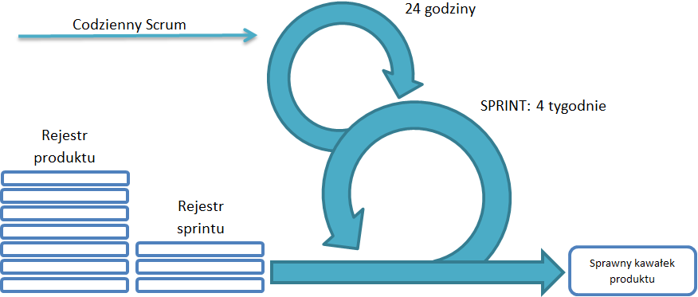
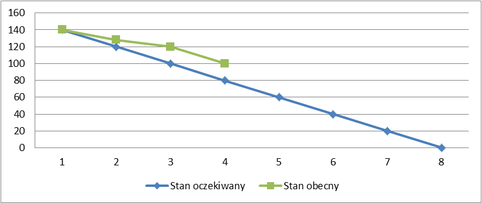

Scrum jest to metodyka o charakterze iteracyjnym oraz przyrostowym zaliczana do zwinnych metod pracy zgodnych z manifestem Agile.
Scrum został opracowany przez Kena Schwabera oraz Jeffa Sutherlanda i po raz pierwszy został zaprezentowany szerszemu gronu w Austin, w Texasie w 1995 roku podczas konferencji OOPSLA obecnie Splash.
Co ciekawe autorzy określają tę metodę jako lekką i łatwą do zrozumienia, ale trudną do opanowania. Dodatkowo dość rygorystycznie stwierdzają, że jeśli do metody scrumowej wprowadza się modyfikacje jego głównych założeń, to nie można tej metody pełnoprawnie nazywać Scrumem przy czym uznają, że Scrum to szkielet, który pozostawia wykonawcom znaczny obszar do zagospodarowania. [1]
Autorzy jako trzy główne filary stworzonej przez siebie metody określają przejrzystość, inspekcję i adaptację przy czym wielu osobom Scrum przede wszystkim kojarzy się z samoorganizacją i motywacją zespołu, co też jest jego bardzo ważnym elementem. Ponadto Scrum bazuje na założeniu, że wiedza wynika z doświadczenia, a decyzje łatwiej i lepiej podejmować w oparciu o to, co poznane.
Rys. 3.3.1 Proces zarządzania projektem metodą scrumową
Tak jak wspomniano Scrum jest to metoda oparta na cyklicznym (iteracyjnym) dostarczaniu kolejnej gotowej do użycia funkcjonalności (przyrost). Aby zagwarantować taki model tworzenia oprogramowania zaproponowano fazę startu, która polega na zaplanowaniu ogólnej wizji produktu i jego kolejnych wydań oraz cykliczne fazy realizacji kolejnych funkcjonalności tzw. sprinty, na które składają się nie tak fazy co konkretne zdarzenia: planowanie sprintu, codzienne scrumy, przegląd sprintu oraz retrospektywa. W ramach sprintu realizowane są również działania mające na celu porządkowanie oraz uszczegóławanie wymagań dla danego projektu przy czym w przeciwieństwie do zdarzeń wymienionych wcześniej działanie to ma charakter ciągłego procesu. Każde z tych działań jest precyzyjnie opisane w oficjalnym przewodniku Scruma oraz innych pozycjach książkowych (np. Chrapko M.: Scrum. O zwinnym zarządzaniu projektami. Gliwicie. Helion. 2012.).
Na potrzeby tego opracowania ograniczymy się jedynie do opisu codziennych scrumów. Wybór ten nie jest przypadkowy. Charakter tych spotkań w zestawieniu z narodowym sportem amerykanów dał nazwę dla całej metodyki. Scrum (młyn) w sporcie jest to ustawienie zawodników przeciwnych drużyn, które formuje się, aby szybko i na równych warunkach wznowić grę po nieznacznym przewinieniu jednego z zawodników. Wracając jednak do opisu scruma w kontekście metodyki zarządzania projektami podobnie jak pozostałe wydarzenia ma on ściśle ograniczony czas trwania – codzienne scrumy mogą trwać maksymalnie 15 minut. Przestrzeganie tego ograniczenia jest bardzo ważne z co najmniej dwóch powodów. Po pierwsze jak już wspomniano są to spotkania codzienne, tak więc muszą one być na tyle krótkie, aby nie zdominowały całego dnia. Po drugie w spotkaniach bierze udział cały zespół, więc cena takiego piętnastominutowego spotkania jest tak naprawdę wysoka. Podczas tych codziennych spotkań każdy członek zespołu odpowiada na trzy pytania: Co robił wczoraj? Co będzie robił dzisiaj? Co mu przeszkadza w pracy? Te trzy, niepozorne pytania pozwalają innym czlonkom zespołu zorientować się w postępie prac, ale mają również funkcję motywacyjną, ponieważ dużo trudniej w takim sytuacji przyznać się do faktu, że właściwie przez cały dzień nie udało się nic zrobić. Na koniec spotkania krótko analizuje się jak dużo pracy pozostało do końca sprintu oraz jaka jest tendencja pracy i czy gwarantuje ona pomyślne ukończenie tego cyklu. Poza ograniczeniem czasowym spotkania oraz wskazanymi pytaniami i analizą postępu prac przewodnik scruma kładzie również nacisk na to, aby w spotkaniu brali udział tylko i wyłącznie członkowie projektu. Obecność na przykład menedżera projektu mogłaby sprawić, że spotkanie przyjęłoby charakter sprawozdania, a w praktyce jest ono dalekie od takiej funkcji. Codzienne scrumy poprawiają komunikację, elminują dodatkowe spotkania, identyfikują i usuwają przeszkody, sprzyjają szybkiemu podejmowaniu decyzji i podnoszą poziom wiedzy zespołu. [1]
To właśnie zespół jest jednym z głównych elementów, któremu metodyka Scrum poświęca najwięcej uwagii. Zespoły scrumowe są interdyscyplinarne. Składają się z osób posiadajacych wszystkie kompetencje niezbędne do wytworzenia produktu przy czym każdy członek zespołu niezależnie od tego, jaką pracę wykonuje, nazywany jest deweloperem. Aby maksymalnie wykorzystać potencjał zespołu powinien on liczyć od 3 do 9 deweloperów. Ponadto w skład zespołu wchodzi Scrum Master oraz Właściciel Produktu. [1]
Scrum Master służy zespołowi. Usuwa przeszkody. I chociaż nie można powiedzieć, że organizuje czy też prowadzi codzienne scrumy, bo jest to przede wszystkim rolą zespołu, to jednak na nim spoczywa główna odpowiedzialność za sprawne przeprowadzenie tych codziennych spotkań. W związku z tym musi umieć sprostać typowym wyzwaniom, jakimi są spóźnienia, próby ingerencji w spotkanie osób spoza zespołu, problemy z samoorganizacją członków zespołu, bagatelizowanie spotkania, poczucie raportowania. [2 s.282-285]
Właściciel Produktu, jak sama nazwa tej roli wskazuje, jest odpowiedzialny za produkt, co przekłada się przede wszystkim na zarządzanie wymaganiami oraz dbałość o ich wartość dla klienta finalnego.
Właściciel Produktu, aby być skutecznym powinien: [2 s. 71-75]
W odróżnieniu od podejścia tradycyjnego w Scrumie Właściciel Produktu jest częścią zespołu projektowego, to znaczy bieże aktywny udział w codziennej pracy zespołu odpowiadając na pojawiające się pytania oraz wyznaczając priorytety działań, a wszystko to w kontekście jasnej i spójnej wizji produktu.
Jednym z podstawowych narzędzi pracy Właściciela Produktu jest Rejest Produktu (ang. Product Backlog). Jest to uporządkowana od najwyższego do najniższego priorytetu lista funkcjonalności, które powinny zostać wdrożone do produktu. Funkcjonalności można z rejestru usuwać, jak też dodawać nowe umieszczając w rejestrze w miejscu odpowiadającym ich ważności. Co ważne podczas projektu kolejność funkcjonalności w rejestrze może się zmieniać. Jest to odpowiedzią na zmieniające się otoczenie projektu, zdobywanie nowych informacji o produkcie czy też inne czynniki wewnętrzne i zewnętrzne. Podczas sprintów implementowane są funkcjonalności o najwyższym priorytecie. Za zawartość Rejestru Produktu, dostępność i uporządkowanie odpowiada Właściciel Produktu. [1]
Funkcjonalności w Scrumie zapisywane są w formie historyjek użytkownika (ang. User Stories).
Wzorców zapisywania historyjek jest kilka. Poniżej przedstawiono dwa z nich:
Jako [typ użytkownika] chcę wykonać [nazwa zadania], żeby osiągnąć [cel]. [2 s. 141]
Jako [rola] mogę [funkcjonalność], aby [powód]. (ang. As a [role], I can [feature] so that [reason].) [3]
Zapisywanie wymagań funkcjonalnych w formie takich krótkich historyjek ogranicza możliwość zawarcia w tekście wszystkich informacji, co z kolei rodzi potrzebę rozmowy. Komunikacja oraz zaufanie są ważnymi elementami tak Scruma jak i pozostałych zwinnych metod tworzenia oprogramowania.
Ponadto niezależnie od przyjętego szablonu tworzenia historyjek podczas ich pisania przede wszystkim trzeba pamiętać o tym, aby były one zrozumiałe i wartościowe dla użytkownika finalnego, a także możliwe do oszacowania i przetestowania przez programistów.
Podczas szacowania historyjki wykorzystyje się punkty lub dni idealne.
Szacowanie rozmiaru pracy w punktach może odbywać się na dwa sposoby. Pierwszy sposób zakłada, że z puli przygotowanych historyjek zespół wybiera najmniejszą i przyznaje jej jeden punkt. Pozostałe historyjki ocenia w porównaniu do tej pierwszej i przyznaje im punkty na przykład w skali od 1 do 10 punktów. Druga metoda zakłada, że zamiast najmniejszej zespół wybiera historyjkę średnio pracochłonną i przyznaje jej pięć punktów. Pozostałe historyjki podobnie jak w metodzie pierwszej zespół ocenia w porównaniu do tej średnio pracochłonnej. Świadomie na początku tego akapitu pominięto definicję punktów, ponieważ poza tym, że jest to relatywna miara pracy trudno o niej powiedzieć coś więcej bez przechodzenia do tego, jak punkty właściwie działają. [2 s.179-180]
Wyrażenie pracochłonności w formie dni idealnych jest to po prostu oszacowanie ile dni zajęłoby wdrożenie konkretnej funkcjonalności, gdyby założyć, że w ciągu dnia zespół nie ma innych obowiązków, nie dochodzi do żadnych przestojów, a wydajność pracy jest maksymalna.
W kontekście testowania historyjki bardzo ważnym elementem każdej historyjki są testy akceptacyjne, które definuje Właściciel Produktu, a które pozwalają ocenić, że historyjka została wdrożona prawidłowo.
Metoda scrumowa dostarcza konkretnych narzędzi do szacowania, testowania, a także monitorowania postępu pracy. Status realizacji projektu ocenia się na podstawie wykresu spalania. W wersji uproszczonej jest to wykres słupkowy, który na osi rzędnych (0Y) przedstawia sumaryczną wartość oszacowanej pracy w punktach lub dniach idealnych, a na osi odcięty (0X) liczbę planowanych sprintów. Prosta łącząca punkt na osi rzędnych z punktem na osi odciętych reprezentuje postęp prac przy założeniu, że zespół pracuje ze stałą wydajnością. Każdemu kolejnemu sprintowi odpowiada mniejsza liczba punktów, które pozostają do wdrożenia. Punkty, które zespół już wdrożył są to punkty spalone. Stąd nazwa dla tego wykresu. Po każdym sprincie na wykres nanoszona jest faktyczna wartość spalonych punktów, która uwzględnia wydajność zespołu, a także zmieniający się zakres prac. Łączenie kolejnych wartości dla poszczególnych sprintów pokazuje, czy stan obecny jest zgodny ze stanem oczekiwanym.
Rys. 3.3.2 Wykres spalania jako narzędzie monitorowania postępu prac w Scrumie
[1] Schwaber K., Sutherland J.: The Scrum Guide. Przewodnik po Scrumie: Reguły Gry. Scrum.org. 2011.
[2] Chrapko M.: Scrum. O zwinnym zarządzaniu projektami. Gliwicie. Helion. 2012.
[3] http://codesqueeze.com/the-easy-way-to-writing-good-user-stories/ z dnia 28.07.13